3D Coordinate Systems
Right-handed coordinate system:
Left-handed coordinate system:
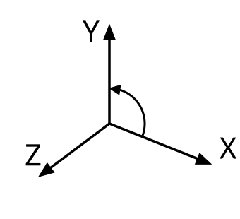
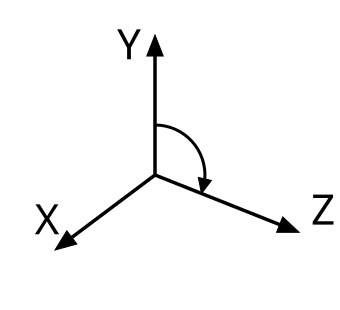
By convention, positive rotations in a right-handed coordinate system are such that, when looking from a positive axis towards the origin, a 90 degree counterclockwise rotation will transform one positive axis into the next.
Thus, if we’re looking from the positive x direction: y goes to z;
If from y: z goes to x;
If from z: x goes to y;
In the left-handed coordinate system the direction is reversed.
Another common rule is the “thumb rule”: imagine that your thumb is the positive z-axis. Your fingers curl from the positive x-axis towards the positive y-axis.
Right-handed coordinate system is used to define transformations, since this is the standard mathematical convention. However, beware that not all graphics texts use a right-handed system. In particular, camera centered coordinate systems are often left-handed, because it is convenient to think of the z (depth) axis as pointing away from the viewer, such that more distant objects have greater depth (z) values.
Dot and Cross Products
Cross product (3D): perpendicular to both, right-hand rule
v × u = −u × v
Needed for Rodrigues' formula and for positioning the camera. The dot product measures how much of v lies along u: ‖u‖‖v‖cos θ; with u a unit vector it is the signed length of v's projection onto u (week 2). It is zero exactly when the vectors are perpendicular.
The cross product exists only in 3D. u × v is perpendicular to both u and v; its direction follows the right-hand rule (fingers from u to v, the thumb gives u × v; in a right-handed coordinate system, x × y = z), and its length is ‖u‖‖v‖sin θ, the area of the parallelogram they span. So it vanishes when u and v are parallel, and swapping them flips it: v × u = −u × v. Written as a matrix, u × v = [u]× v, with [u]× skew-symmetric.
Demo: the θ slider opens the angle; watch the projection (blue band) shrink and turn negative past 90°, and the cross product grow to its maximum at 90° (the parallelogram is then a rectangle) and shrink back to zero at 180°. The buttons swap the order. Drag the view to turn it (double-click resets).
Two uses coming up: in Rodrigues' formula, for a unit axis k, k × v is v⊥ turned by 90° about k (same length), and (k·v)k is v's projection onto the axis; in positioning the camera, cross products build the camera's perpendicular axes. And the normal of a triangle is the cross product of two of its edges.
3D Transformations
A point is represented by a 3D column vector:
Affine transformations are 4 by 4 matrices:
3D Transformations
Here, as in the 2D case, if the lower right element of the matrix is some s ≠ 1, the result (after dividing by it) is a uniform scaling by 1/s.
3D Reflection
Reflections through the xz yz
How can we reflect through some arbitrary plane?
Suppose we know a point P on the plane.
1) Translate P to the origin;
2) Rotate the normal vector until it coincides with the +z axis
3) Reflect through the xy plane
4) Apply the inverse rotations to the ones in stage 2
5) Translate the origin back to P.
3D Shearing
Only x y z
Shears of y z
A cube becomes a parallelepiped of equal volume
Think of the unit cube as a stack of thin layers: each layer slides in x, in proportion to its y and z, like a deck of cards pushed sideways. Edges along x keep their length, the square faces become parallelograms, and the cube becomes a parallelepiped, still anchored at the origin, with the same volume: the determinant is 1.
Putting all six off-diagonal entries into one matrix gives a general linear map, not a shear: with a = c = 1 and the others 0, for example, the determinant is 0 and the cube collapses flat.
3D Rotation
Rotation about the x
Rotations about each of the other two axes are defined similarly.
Rotations are orthogonal matrices, preserving distances and angles.
For rotation about the x-axis, the x coordinates of the object must remain unchanged. The rotation occurs in a plane perpendicular to the axis.
Note that when rotating about y, we must reverse the signs on the sines, in order to be consistent with the usage of a right handed coordinate system.
Rotation About an Arbitrary Axis
The idea: make the arbitrary axis coincident with one of the coordinate axes, rotate, and then transform back:
Translate rotation axis to pass through the origin;
Rotate about the X axis into the XZ plane;
Rotate about the Y axis onto the Z axis;
Rotate about the Z axis by the desired angle;
Apply inverse rotations about the Y and X axes;
Apply inverse translation.
The video (linked at the bottom) animates these steps.
Rodrigues’ Rotation Formula
Rotation by θ k v
v ∥ v ⊥ θ k × v
The closed form of the rotations on the previous slide (the steps between the two translations): rotation by θ about a unit axis k through the origin (for an axis through another point, translate it to the origin first, as before). Stated, not derived; the picture is the derivation. The component of v along the axis, v∥ = (k·v)k, does not move. The rest, v⊥, lies in the plane perpendicular to k and turns in that plane by θ, toward k × v, which is v⊥ turned by 90° (same length). So Rv = v∥ + cos θ v⊥ + sin θ (k × v). Writing k × v as the matrix [k]× applied to v, and v∥ as kkᵀv, gives the matrix form.
Demo: move the θ slider; the tip of v travels on the dashed circle. Drag the view to turn it (double-click resets).
Sanity checks: θ = 0 gives I; k = z gives the familiar rotation about z. Axis–angle is a compact way to store a rotation (3 numbers: the axis scaled by the angle). Quaternions (next) encode the same axis and angle.
Euler Angles
Euler’s rotation theorem : any rotation or sequence of rotations of a rigid body about a fixed point is equivalent to a single rotation by a given angle θ Euler axis ) that runs through the fixed point.Euler angles : the orientation of an object is specified by rotation angles about the X, Y, Z axes (performed in this order)How can we smoothly interpolate between two different orientations?
Euler angle interpolation is not intuitive!
Gimbal Lock may occur… (video )
The result of any sequence of rotations of a 3D object about a fixed point in space, may be equivalently achieved by a single rotation about a fixed axis that runs through the same point.
Related result: any orientation of a 3D object can be achieved by starting with the object in some canonical pose, and applying 3 rotations, one about each axis (in some predetermined order). This means that any orientation can be represented using 3 angles.
Suppose we have two orientations and we’d like to interpolate between them. Since each orientation is represented using 3 angles, it’s natural to try to interpolate the three angles. However, the results are not always intuitive.
The gimbal lock video is linked from the last bullet.
Quaternions
A rotation by ϕ u
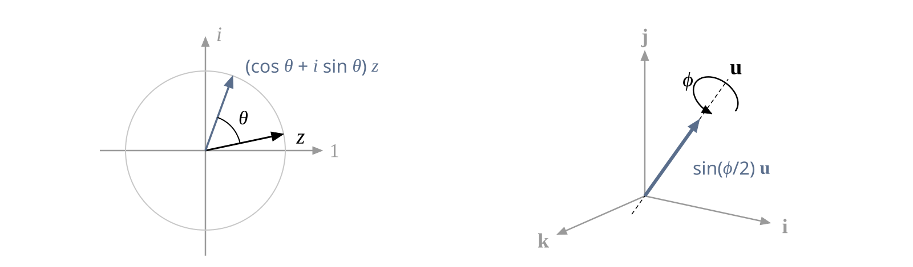
Complex numbers: one imaginary unit,i 2 = −1
Quaternions: three imaginary units,i 2 = j 2 = k 2 = ijk = −1
Composing rotations is multiplying quaternions; no gimbal lock
Quaternions are covered in recitation 3: the algebra, rotating a vector by q [0, v] q⁻¹, the rotation matrix, and slerp.
What a quaternion is, starting from complex numbers. A complex number has one real and one imaginary part, with i² = −1, and multiplying by the unit complex number cos θ + i sin θ rotates the plane by θ (left). Quaternions have one real part and three imaginary units i, j, k, one for each axis of space, with i² = j² = k² = ijk = −1 (so ij = k but ji = −k: the product does not commute, just like rotations in 3D). So a quaternion is a real number plus a 3D vector. A rotation by ϕ about the unit axis u is the unit quaternion with real part cos(ϕ/2) and vector part sin(ϕ/2) u (right): the same axis and angle as in Rodrigues' formula, stored in four numbers. (The half angle is because a vector v is rotated by q v q⁻¹, which applies q twice: R3.)
Successive rotations multiply. There is no gimbal lock, and interpolating between two unit quaternions (slerp, along the unit sphere in 4D) gives a smooth interpolation between orientations, which is why animation systems and game engines store orientations this way.
Quaternions
Rotations may be represented by unit quaternions:
a, b, c, d
Rotation by angle ϕ [b, c, d ] corresponds to the quaternion:
Another way to represent rotations that does not suffer from the same issues as Euler angles is by using quaternions.
You can think of a quaternion as an extension of complex numbers, which instead of having just one imaginary coordinate have three such coordinates (in addition to a single real coordinate). So instead of the complex plane, we have the complex 4D space.
Here on the slide you have some rules for the imaginary units.
A rotation about an arbitrary axis (unit vector) may be represented by a unit quaternion.
Quaternions (cont’d)
A 3D vector v
The rotation matrix corresponding to this rotation:
Performing successive rotations corresponds to multiplying unit quaternions
To rotate a 3D point or vector, we convert it into a pure quaternion, by adding 0 as the real coordinate, and multiply the resulting quaternion with q from the left, and with its inverse from the right.
Of course, as with any rotation, this is just a special case of an affine transformation, so it may be expressed as a matrix. The matrix is the one on the slide, but we’re not going to prove the derivation.
In order to perform successive rotations, we can just multiply their corresponding quaternions. Again, we’re not going to prove that it’s equivalent to multiplying the rotation matrices of the form above, but you’re welcome to do this easy exercise on your own.
Quaternions (cont’d)
Unit quaternions can be thought of as points on the unit sphere in 4D
Interpolating between orientations can be done by spherical linear interpolation (slerp) between unit quaternions!
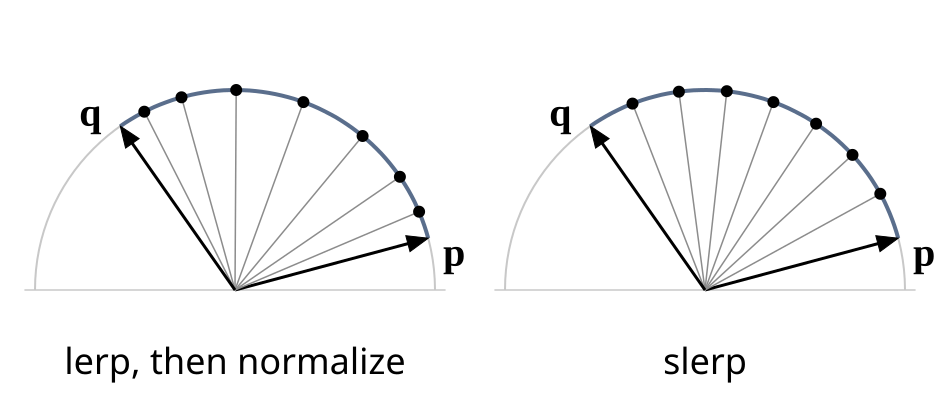
Finally, since rotations are represented by unit quaternions, you can think of them as points on a 4D unit sphere. Interpolating between them may be done by marching along an arc on that sphere, the portion of the great circle that connects the two points. This gives a unique and predictable way to interpolate between two orientations.
Transforming Planes
One way to transform a plane is by transforming any three non-collinear points on the plane.
Another way is to transform the plane equation coefficients [A,B,C,D ] directly:
Given a transformation T [x,y,z ] to [x′,y′,z′ ] find A′, B′, C′ D′
A plane is defined by all points (x,y,z,1) whose scalar product with the plane equation coefficients vector (A,B,C,D) is 0.
Thus, the transformed plane equation (A’,B’,C’,D’) must satisfy the same property for the transformed point (x’,y’,z’,1).
Transforming Planes (continued)
Thus, we can transform a plane equation by:
[A,B,C ] is normal to the plane, so this is also how we transform normal vectors!
The first 3 coefficients of the plane equation define a vector normal to the plane. The proof is an easy exercise.
Thus, a normal vector may be thought of as a plane equation with D=0, a plane that passes through the origin.
Therefore, transforming normal vectors may be done using the method just derived for transforming the plane equation.
It follows that a pure rotation is the same for normal vectors: Since the inverse is just the transpose, taking the transpose of the inverse gets us the original rotation. But a general transformation isn’t the same. For example, scaling to stretch along the x-axis will make the normal to shrink along its x coordinate.
Changing Coordinate Frames
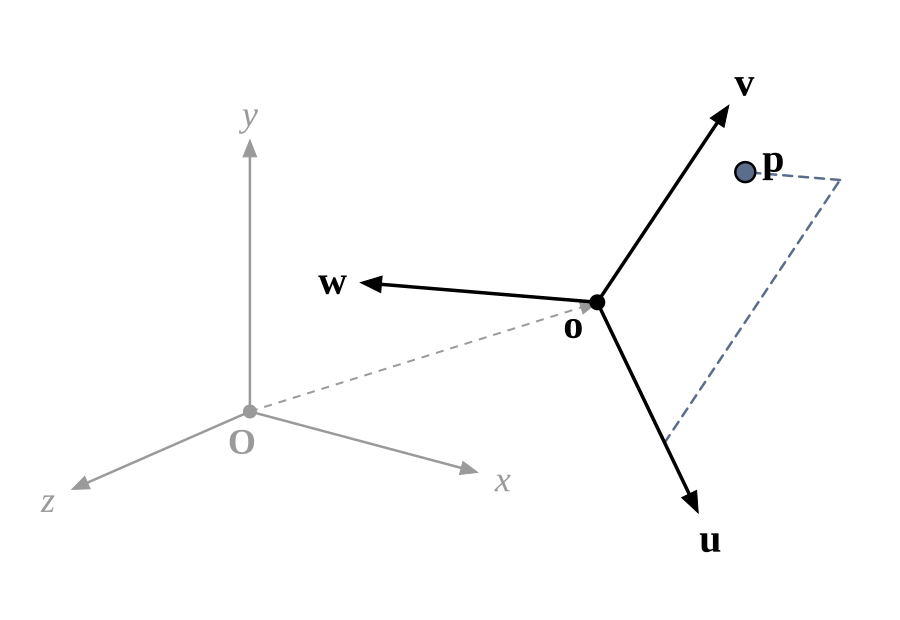
A frame: an origin o u , v , w
World to frame, with R = [u v w ]
Every transformation so far moved points within one coordinate system. The same matrices also change coordinates between frames. A frame is an origin o and three orthonormal axes u, v, w (given in world coordinates). A point with coordinates (a, b, c) in the frame is p = o + a u + b v + c w in the world: the matrix whose columns are u, v, w and o. Going the other way is its inverse; since R = [u v w] is orthonormal, R⁻¹ = Rᵀ, so the inverse is cheap: rotate by Rᵀ after translating by −o, which is the matrix shown.
Two instances we use all the time: the modeling transformation (an object's own frame placed in the world: frame to world) and the viewing transformation (the world seen from the camera's frame: world to frame), which is how we will build the camera next.
Changing Coordinate Frames
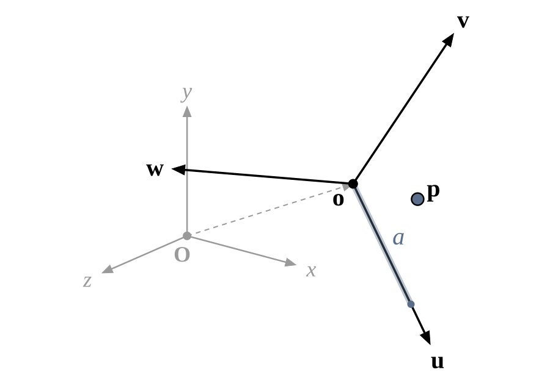
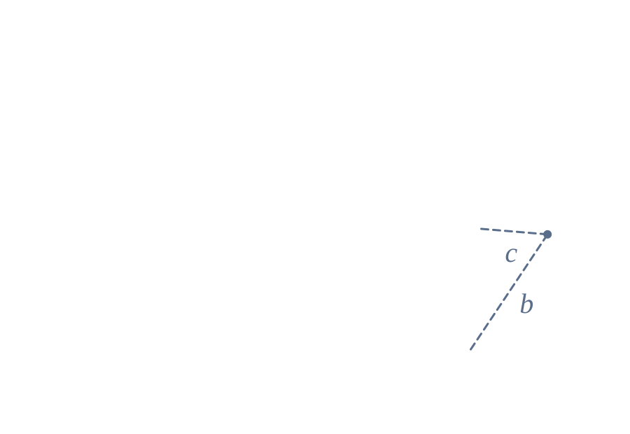
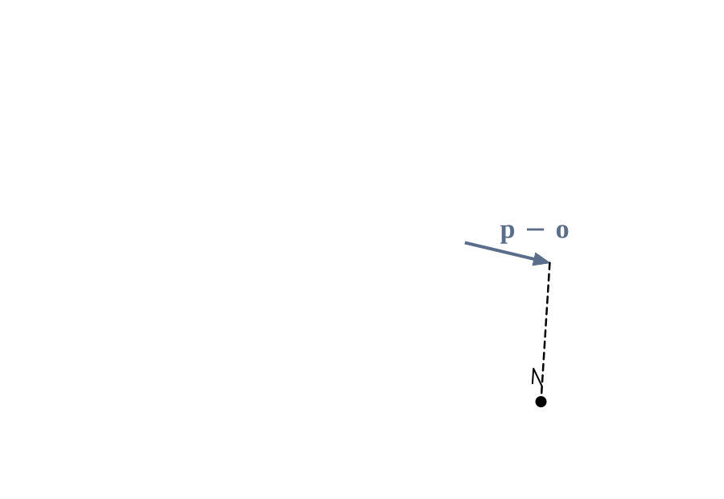
Frame to world: the axes are the columns
World to frame: project p − o
Stacked, the axes become the rows:
R = [u v w ]R −1 = R T
As 4×4 matrices: translate, then rotate
A frame is an origin o and three orthonormal axes u, v, w, given in world coordinates. Every transformation so far moved points within one coordinate system; the same matrices also change coordinates between frames.
Frame to world: a point with coordinates (a, b, c) in the frame is p = o + a u + b v + c w: in the figure, start at o and go a along u, then b along v, then c along w. As a matrix, the axes and the origin are the columns.
World to frame (click): to find the coordinates of a world point p, measure p − o along each axis. Because the axes are orthonormal unit vectors, the coordinate along u is the projection a = u·(p − o), as on the dot product slide of week 2; the figure shows it for u: the perpendicular from p lands exactly where the first leg of the path ends. b and c are found the same way along v and w.
Click: stacking the three dot products, the axes become the rows of a matrix: that matrix is the transpose of R = [u v w]. So no inverse has to be computed: for orthonormal axes, R⁻¹ = Rᵀ.
Click: the same with 4×4 matrices acting on [p 1]. Frame to world first rotates by R and then translates by o; world to frame undoes the two steps in reverse order: translate by −o, then rotate by Rᵀ. Multiplying the two gives the single matrix with −Rᵀo in the corner.
A check: RᵀR has the entries u·u, u·v, …, w·w: 1 on the diagonal and 0 elsewhere, since the axes are orthonormal. So RᵀR = I, and the product of the two 4×4 matrices is the identity.
Two instances we use all the time: the modeling transformation (an object's own frame placed in the world: frame to world) and the viewing transformation (the world seen from the camera's frame: world to frame), which is how we will build the camera next.
Taking a Real Photograph
Arrange objects
Position and point the camera
Choose a lens, set the zoom
Take a picture
Enlarge and crop to get a print
Imagine a real photographer setting up to take a photograph of an object.
First, he arranges the objects in the desired configuration.
Second, we place the camera in the scene and point it at some point of interest.
Then, we adjust the zoom of the lens, and take the picture.
After the image is taken, and the film is developed, we have an image on the film. This image is then enlarged and cropped to produce the final result. Note, that this last stage is a 2D to 2D transformation.
Taking a Virtual Photograph
Arrange objects
Apply modeling transformations to objects: change from object coordinates to world coordinates
Position and point the camera
Position, point, and orient the virtual camera: define a transformation from world to eye coordinates
Choose a lens, set the zoom
Specify a view volume: define a perspective transformation that transforms eye coordinates to canonical normalized viewing space (clip coordinates )
The terminology and nomenclature for the different stages of 3D viewing, the different coordinate spaces, and their names is unfortunately non-uniform across different textbooks and different graphics APIs.
We’ll stick with the viewing pipeline and the coordinate names used by OpenGL.
Arranging the objects in the desired configuration is done by applying to each object various modeling transformations (object to world coordinates transformations).
Second, we place the camera in the scene and point it at some point of interest (viewing transformation: world to eye coordinates).
Third, we choose the lens and adjust the zoom: this is equivalent to choosing a projective transformation.
Taking a Virtual Photograph
Take a picture
Project objects by applying the projective transformation followed by a perspective divide . The result is normalized device coordinates.
Enlarge and crop to get a print
Apply viewport transformation to obtain actual raster coordinates.
Third, we choose the lens and adjust the zoom: this is equivalent to choosing a projective transformation.
Applying this transformation, followed by division by the fourth homogeneous coordinate is the equivalent of actually taking the picture.
After this stage we might want to select a part of the image to show in a window of some specified size, and that’s accomplished using the viewport transformation.
Viewing in 3D
How to transform 3D world coordinates to 2D display coordinates?
Projections
How to specify which part of the 3D world is to be viewed?
Define a 3D viewing volume
How to avoid displaying primitives outside the viewing volume?
Culling and Clipping
A few questions to be answered:
First, what is the right way of transforming the 3D coordinates of the world to the 2D display coordinates?
Second, how should the world viewing window be specified?
Solutions: projections and view volumes.
How to avoid displaying primitives outside the view volume?
Solution: culling and clipping.
Taking a Photograph
A real camera
A virtual camera
Arrange the objects
Modeling transformations: object → world coordinates
Position and point the camera
Viewing transformation: world → eye coordinates
Choose a lens, set the zoom
Projection (the view volume): eye → clip coordinates
Take the picture
Divide by w clip → normalized device coordinates
Enlarge and crop to get a print
Viewport transformation: → raster coordinates
Imagine a photographer setting up a shot, and the same steps for a virtual camera. The terminology for the stages of 3D viewing and for the coordinate systems varies between textbooks and graphics APIs; we use the names of OpenGL.
Arranging the objects in the desired configuration is done by applying a modeling transformation to each object: from its own object coordinates to world coordinates. Placing the camera in the scene and pointing it at something is the viewing transformation: from world coordinates to eye (camera) coordinates. Choosing the lens and setting the zoom is choosing a projection, which also defines the view volume: what the camera can see. Applying it, followed by the division by the fourth homogeneous coordinate, is the equivalent of taking the picture; the result is in normalized device coordinates. Enlarging and cropping the print is the viewport transformation, a 2D-to-2D mapping to raster coordinates: pixel positions in the image being drawn, plus depth (OpenGL calls them window coordinates).
The next slide puts these steps together as the graphics pipeline.
The Graphics Pipeline
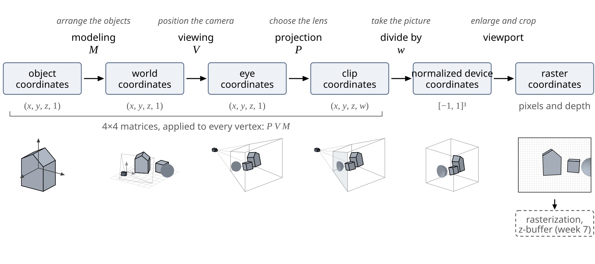
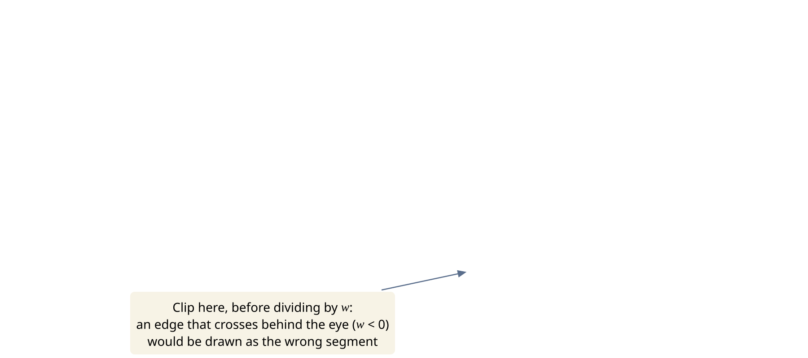
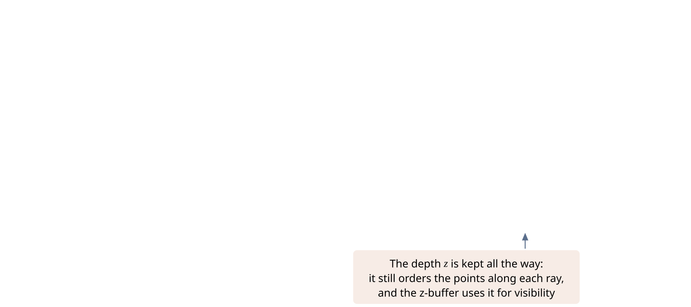
The whole viewing pipeline in one place. The rest of the lecture fills in the stages one by one: positioning the camera (V), projections and the projection matrix (P), the frustum and the depth mapping, clipping, the viewport; and at the end, the camera matrix P = K[R|t] is this same chain.
The photographer's analogy, above the arrows: arrange the objects (modeling transformations: object to world coordinates); position and point the camera (viewing transformation: world to eye coordinates); choose the lens and zoom (projection: eye to clip coordinates); take the picture (divide by w: normalized device coordinates); enlarge and crop the print (viewport: raster coordinates, in pixels, with depth; OpenGL calls them window coordinates). The terminology varies between textbooks and APIs; we follow OpenGL's names.
M, V and P are 4×4 matrices, composed into one and applied to every vertex. Everything inside the view volume ends up in the cube [−1, 1]³.
Under the boxes, one scene (a house, a cube and a sphere) followed through the pipeline, computed with these very steps. The house in its own coordinates, around its own origin. The scene placed in the world, with the camera and the start of its view frustum. The same scene in eye coordinates: the camera at the origin, looking down −z, with the frustum from the near plane to the far plane. Clipping: the sphere sticks out through the right side of the frustum and is cut there, so we see into it. Normalized device coordinates: the frustum has become the cube, drawn from the same side as the frustum before it (near faces toward the camera); objects near the camera are enlarged the most, and depth is compressed toward the far face. Raster coordinates: the image the camera takes, in pixels (here a viewport of only 32 × 24 pixels, so that the pixels are visible).
Click 1: clipping is done in clip coordinates, before the division, while the sign of w still tells points in front of the eye (w > 0) from points behind it. The test is simply −w ≤ x, y, z ≤ w. After the division, an edge or triangle that crosses the eye plane would be drawn between its projected vertices, over the wrong part of the image (the clipping slides show an example).
Click 2: why keep z at all, when the picture is 2D? After the projection the depth still orders the points along each ray (the mapping is monotonic, though not linear), and the z-buffer uses it to decide which surface is visible. This is week 7: after the viewport, rasterization turns each triangle into pixels and the fragment processor of the GPU shades them; the vertex processor works earlier, computing the clip coordinates of each vertex.
3D Viewing Pipeline
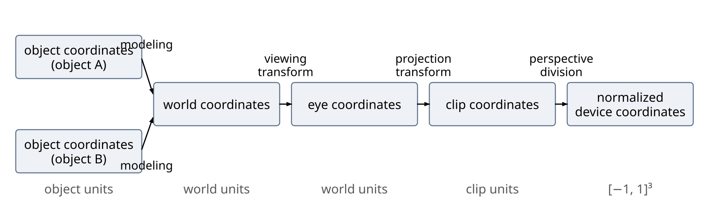
Conceptual pipeline: Get your objects from their individual coordinate systems into the eye (camera) coordinate system, where the 3D view volume is defined; clip 3D object against 3D view volume; then project to 2D (onto some viewing plane); finally transform into the display viewport, just like in 2D.
Positioning the Camera
the world: drag the eye e
what the camera sees
The first stage of the pipeline, world to eye coordinates, built from three things the user specifies: the eye position e, a target point c to look at, and an "up" direction (usually the world's y axis). The camera looks down its own −w axis (the OpenGL convention), so w points from the target back to the eye. u = up × w is horizontal (perpendicular to up and to the viewing direction), and v = w × u completes the frame: it is the camera's own "up", the projection of the up vector onto the image plane. The view matrix is the world-to-frame matrix of the previous section, with the camera's frame: V = [Rᵀ, −Rᵀe], R = [u v w]. Its rows are u, v, w, with −u·e, −v·e, −w·e in the last column. This is gluLookAt (glm::lookAt).
Demo: drag the eye e in the world view to move it around the target; the camera keeps looking at c, so the target stays at the center of its image (right), and the view matrix updates. Drag anywhere else in the world view to turn it; double-click resets.
Up must not be parallel to the viewing direction (then up × w = 0): looking straight down needs another up vector. Tilting up rolls the camera about its viewing direction.
In the camera's frame the eye is at the origin, looking down −z: exactly the setting in which the projection matrices of the next section are derived.
Planar Geometric Projections
A projection is formed by the intersection of certain lines plane
Projectors are lines from the center of projection through each point on object
Center of projection at infinity results in a parallel projection
A finite center of projection results in a perspective projection
These types of projections are called “planar geometric projections”. They are called planar, because the projection is onto a plane, rather than some curved surface, and geometric because the projectors are straight lines, rather than curves.
Non-Planar Projections
Planar geometric projections: straight projectors, onto a plane
Many useful projections are not:
Fisheye lenses: the rays are bent, the image is a disk
Maps of the Earth: onto a cylinder (or a cone), and not by projectors
Many projections are either nonplanar or non-geometric. They are called "planar" because the projection is onto a plane, rather than some curved surface, and "geometric" because the projectors are straight lines, rather than curves. The next two slides take one example each, in the same way: first onto a sphere of directions, then a chosen mapping from the sphere to the plane.
The Fisheye lens, and some other wide angle lenses implement a non-geometric projection, because light rays are bent by such lenses. The familiar Mercator projection (Flemish cartographer Gerardus Mercator, 1569) projects the surface of the Earth onto a cylinder, so it is nonplanar.
Fisheye Projection
a perspective image cannot reach 180°
perspective
fisheye
perspective
fisheye
Why a fisheye image is a circle. Project in two steps: first onto a hemisphere around the COP (all that is left of a point is its direction: the angle θ from the optical axis and the angle around it), then flatten the hemisphere onto the image plane. Perspective sends a direction at angle θ to distance f tan θ from the center, which runs off to infinity as θ approaches 90°: a plane can never hold a 180° field of view. The (equidistant) fisheye sends it to f θ, the length of the arc, unrolled onto the plane: at 90° that is f π/2, finite. The whole hemisphere fits in a disk, and its rim (the directions at 90° to the axis) is the circle.
Demo: drag the projector on the left (double-click resets); the point where it hits the wall is marked in both views. Right: the room seen from its middle, computed per pixel. Switch to perspective and raise the field of view: the walls stretch without bound (perspective stops at 170° here). In the fisheye at 180°, the back wall is in the middle and the four side walls all around it, up to the plane of the camera.
Step: two straight lines on the ceiling, one across the room and one along it. A line and the COP span a plane, which cuts the sphere in a great circle; a great circle maps to a curve in the fisheye image, unless that plane contains the optical axis: a line parallel to the axis (like the one along the ceiling, or the room's long edges) points at the image center and stays straight. In perspective, both are straight.
Optional: other lens models put the same direction at other distances: equisolid angle 2f sin(θ/2), stereographic 2f tan(θ/2), orthographic f sin θ. Real lenses are close to one of these; calibration measures the actual r(θ).
Cylindrical Projections
central
Mercator
equirectangular
The companion of the fisheye slide. Wrap a cylinder around the globe, touching it at the equator. Every map in this family unrolls longitude evenly, x = R λ, and differs only in the height y it gives latitude φ. Left: a meridian seen from the side; drag the point (double-click resets). All three maps are drawn at the same scale.
Central cylindrical: the projector through the center of the Earth meets the cylinder at R tan φ. A true geometric projection, the analog of perspective (f tan θ): it runs off to infinity at the poles, fast. Equirectangular: the arc length R φ, unrolled, like the fisheye's f θ: the whole sphere fits in a 2:1 rectangle. Mercator: not a projection by projectors at all. At latitude φ the parallel (circumference 2πR cos φ) is stretched to the full width 2πR, by sec φ; Mercator stretches north-south by the same factor, dy/dφ = R sec φ, which integrates to y = R ln tan(π/4 + φ/2). The map is conformal: small shapes keep their angles.
The Tissot circles are identical small circles on the globe. Mercator keeps them circles, but they grow toward the poles (conformal, not equal-area: Greenland looks as large as Africa, which is 14 times larger). Equirectangular stretches them sideways into ellipses; central cylindrical stretches them even more vertically.
Step: a rhumb line, a route of constant compass bearing (65° east of north). It crosses every meridian at the same angle, so in the conformal Mercator map it is a straight line: why navigators used it. In the other two maps it curves.
Visual computing connection: the equirectangular map is the standard format for 360° panoramas and environment maps (the whole sphere of directions in one rectangle), which come back in weeks 8 and 12.
Coastlines: Natural Earth (public domain).
Parallel Projection
In the case of parallel projection, we refer to the direction of projection, corresponding to a point [x,y,z,0] in homogeneous coordinates.
Intuition: a direction can be specified by a difference between two points: [x1,y1,z1,1] - [x2,y2,z2,1] = [x,y,z,0]
Note how the use of homogeneous coordinates allows us to treat finite and infinite centers of projection in a uniform manner!
Demo: drag the background to turn the view; double-click to reset. The projectors run from each vertex to the plane, and continue along the direction of projection (DOP).
Parallel Projection
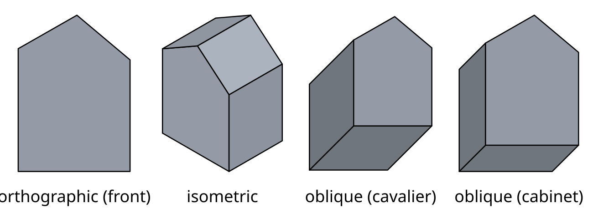
Here are a few examples of parallel projection.
The house of week 2, extruded, in four parallel projections.
Orthographic Projection
Projectors are orthogonal to projection surface, which is typically parallel to one of the coordinate planes:
In orthographic projection, the projectors (lines) are orthogonal to the projection plane.
Preserves both distances and angles in 3D planes that are parallel to the projection plane:
Can be used for measurements of lengths (up to scale) and angles in such planes
Useful for building plans, part drawings, etc.
Demo: drag the background to turn the view; double-click to reset. The projectors run from each vertex to the plane.
Orthographic Projection
Convenient for measuring distances and angles.
Typically several simultaneous projections are shown.
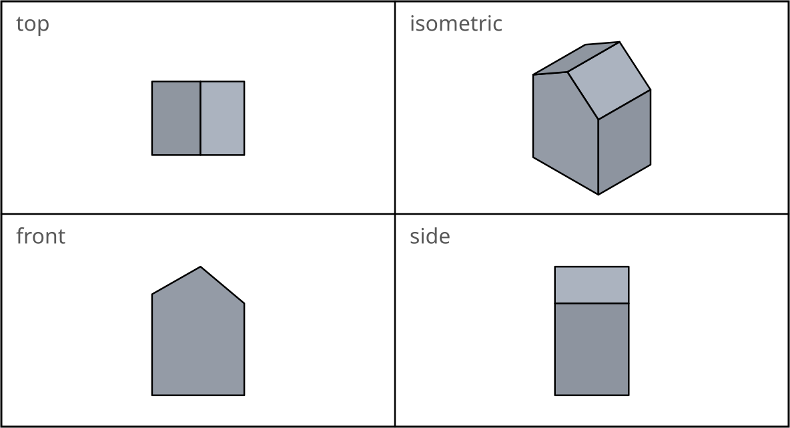
Typically used in a multi-view setting: three projection planes parallel to the coordinate planes, resulting in a top, front, and side views, shown simultaneously.
Cannot see what object really looks like because many surfaces hidden from view
Thus, often we add the isometric view, where the projection direction (and plane) are chosen such that the three world axes appear equally foreshortened, forming an angle of 120 degrees between each pair of axes.
Top, front and side views of the house, with an isometric view.
Axonometric Projections
Projectors are orthogonal to projection surface, which is NOT parallel to one of the coordinate planes
How many angles of an axis-aligned cube’s corner are equal?
none: trimetric
two: dimetric
three: isometric
Projectors are still perpendicular to the plane, but the plane isn’t parallel to one of the three coordinate system planes.
Lines are scaled (foreshortened) but can find scaling factors
Lines preserved but angles are not
Projection of a circle in a plane not parallel to the projection plane is an ellipse
Can see three principal faces of a box-like object
Some optical illusions possible
Parallel lines appear to diverge
Does not look real because far objects are scaled the same as near objects
Used in CAD applications
Demo: drag the background to turn the view; double-click to reset. The projectors run from each vertex to the plane.
Axonometric Projections
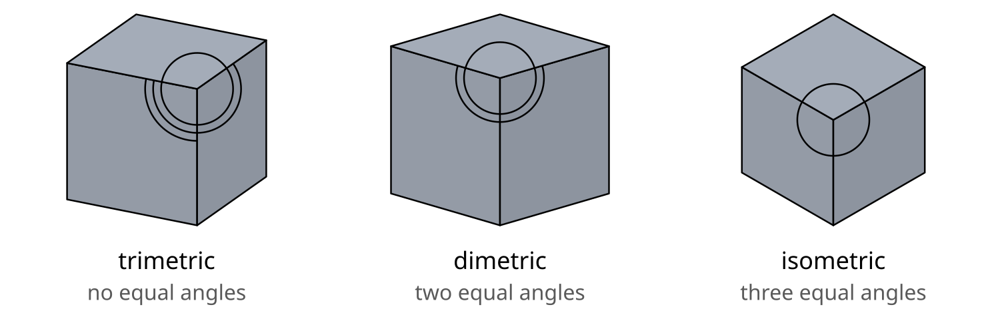
Lines are scaled (foreshortened) but can find scaling factors
Lines preserved but angles are not
Projection of a circle in a plane not parallel to the projection plane is an ellipse
Can see three principal faces of a box-like object
Some optical illusions possible
Parallel lines appear to diverge
Does not look real because far objects are scaled the same as near objects
Used in CAD applications
A cube in the three axonometric projections. At the corner nearest the viewer, the three projected edges make three angles that add up to 360°; equal angles are marked with the same number of arcs. Trimetric: about 134°, 125° and 101°. Dimetric: 147°, 106° and 106°. Isometric: 120° each. Equal angles go with equal foreshortening of the corresponding axes.
Oblique Projections
Arbitrary relationship between projectors and projection plane
Cavalier:
projectors at 45° to the plane
depth lines keep their length
Cabinet:
projectors at arctan 2 ≈ 63.4°
depth lines shrink to half
cavalier
cabinet
Examples:
Cavalier: direction of projection makes a 45 degree angle with the projection plane. As a result, both lines parallel and perpendicular to the projection plane preserve their lengths.
Cabinet: direction of projection makes an angle of arctan(2) with the projection plane. Thus, perpendicular lines appear at half their length, resulting in a slightly more perspective-like appearance (compared to Cavalier).
Demo: drag the background to turn the view; double-click to reset. The projectors run from each vertex to the plane. The buttons switch between cavalier and cabinet: the projectors keep their direction on the plane and only their angle to it changes, so the receding edges keep their slant on the plane and change length, from full length to half.
Perspective Projection
The center of projection for perspective projection is a point,
denoted [x,y,z,1] in homogeneous coordinates.
Demo: drag the background to turn the view; double-click to reset. The projectors run from each vertex to the plane and on to the center of projection (COP).
Parallel vs. Perspective Projection
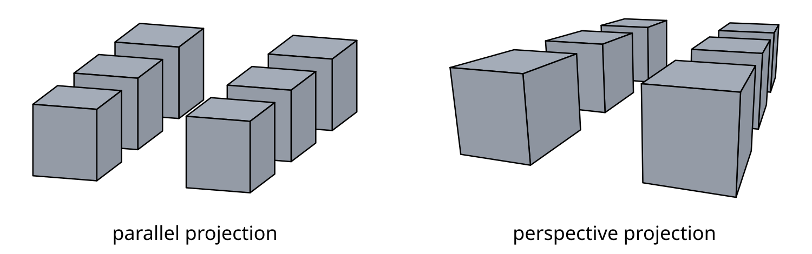
Parallel projection makes it difficult to understand the 3D relationships in the scene, while perspective projection conveys the 3D relationships better.
(The same street of boxes, seen from the same direction, in parallel and in perspective projection. In parallel projection the far boxes are as large as the near ones and the rows stay parallel; in perspective they shrink with distance and the rows converge.)
Vanishing Points
Parallel lines (not parallel to the projection plane) in the scene converge at a single point on the projection plane (the vanishing point):
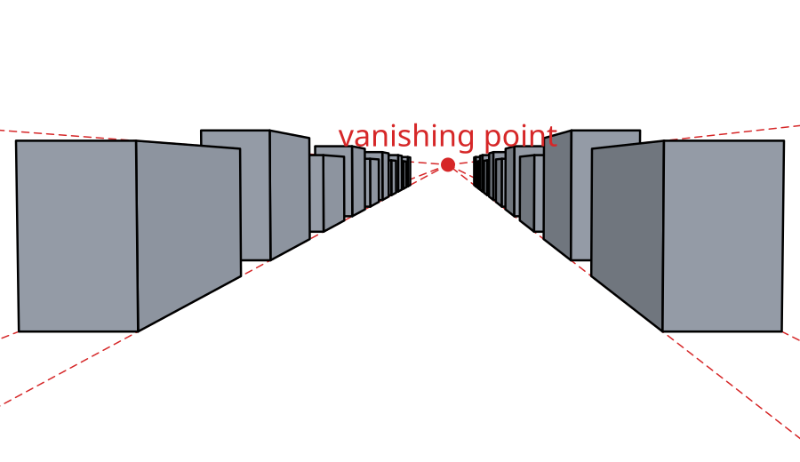
N-point Perspective
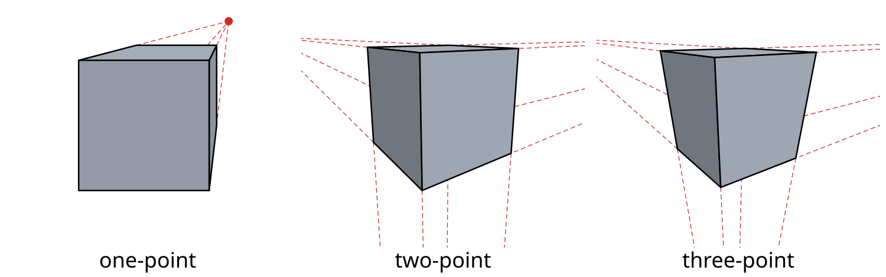
The number of vanishing points traditionally only considers directions parallel to the three coordinate axes in the scene.
A cube in one-, two- and three-point perspective; the dashed lines extend its edges to their vanishing points.
Taxonomy of Projections
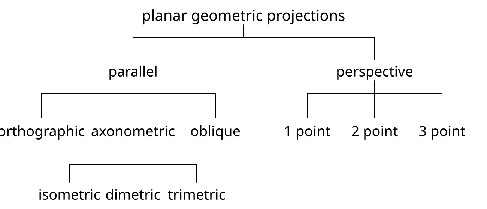
Summary
There are two basic classes of planar geometric projections: parallel and perspective. When defining a parallel projection we must specify the direction of projection, when defining a perspective projection we must specify the center of projection.
Although traditionally parallel and perspective may be further split to classes, in OpenGL we only have these two main types.
Orthographic Projection Matrix
Direction of projection is normal to the projection plane.
Project onto one of the coordinate planes, for example z = 0
This matrix discards all depth information, so it cannot be used in the graphics pipeline.
When the projection is parallel to one of the axes, the other two coordinates should not change - so the matrix is a simple modification of the identity.
Note that the matrix contains a row of zeros. Consequently, the determinant of a projection transformation is always zero.
What does this imply regarding the inverse of the projection matrix? The matrix has no inverse (singular).
In particular, this means that we have lost all depth information, which is needed for hidden surface removal. So another solution is needed for the graphics pipeline.
Orthographic Projection Matrix (in OpenGL)
Specify the boundaries of an axis aligned view volume in eye coordinates:
(left, right ), (bottom, top ), (near, far )
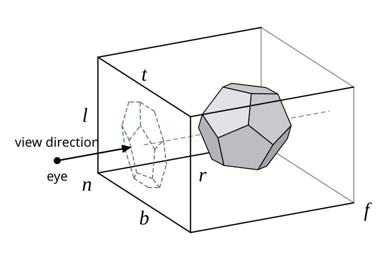
Map the above view volume to normalized device coordinates (everything in [−1,1]3 ):
All three dimensions are preserved!
The modeling and world coordinate systems are right-handed by convention.
The camera in OpenGL is looking down the negative Z axis (i.e., it points away from the camera along the camera optical axis), but the far and near parameters are typically positive numbers, and f > n.
Note that this matrix flips the Z axis, thereby switching to a left-handed coordinate system, where larger values are farther away from the viewer than the smaller ones.
Unity: Matrix4x4.Ortho(left, right, bottom, top, near, far);
Perspective Projection
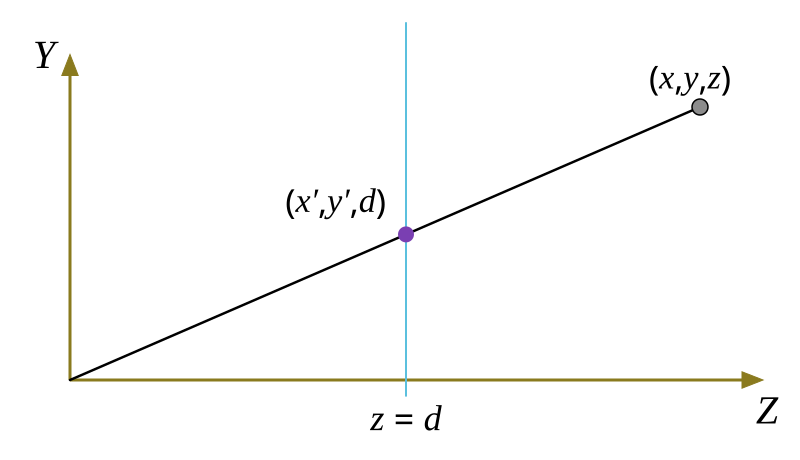
Consider a perspective projection where the center of projection is at the origin and the projection plane is z = d. The projection of an arbitrary point (x,y,z) is (x’,y’,d). Using similar triangles we can write the expressions for x’ and y’. It is quite simple using homogeneous coordinates to come up with a matrix that achieves this transformation.
Again, this matrix discards all depth information, so it’s not what we need for the graphics pipeline!
Observations
The rank of the 4x4 matrix is 3 (= projection)
Points on the projection plane are not changed by the perspective projection
Let’s see what happens to a point at infinity along the Z axis:
This is a vanishing point!
Single-point perspective transformations with vanishing points on the x and the y axes, respectively, are obtained in the same way.
Two-point and three-point transformations are obtained by setting more than one entry in the fourth row to nonzero.
Perspective Projection on a General Plane
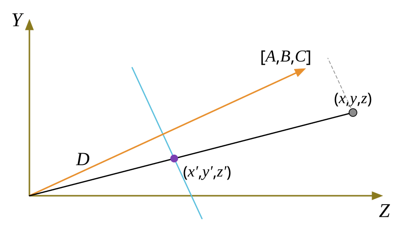
Project (x,y,z ) onto (A,B,C ) :
Consider a perspective projection where the center of projection is at the origin and the projection plane is some general plane, not perpendicular to any of the 3 main axes. <click>
We further assume the plane equation is normalized.
This means that the distance between the plane and the origin is D, and the normal vector to the plane is [A,B,C] <click>
The projection of a general point (x,y,z) onto the optical axis is Ax+By+Cz <click>
Now we can use similar triangles again, to obtain an expression for x’ (the projection of x onto the plane).
As we can see, the projection is obtained by multiplying with D and dividing by the distance along the optical axis.
This can be carried out by multiplying with the following projection matrix <click>:
After dividing by the homogeneous coordinate, we get exactly what we want.
Perspective Projection on a General Plane
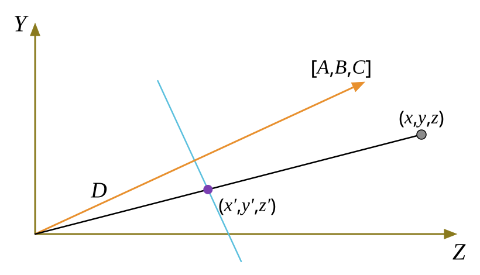
Consider a perspective projection where the center of projection is at the origin and the projection plane is some general plane, not perpendicular to any of the 3 main axes. <click>
On the one hand, we know that (x’,y’,z’) lies on the line connecting the origin and (x,y,z), so it may be expressed as t(x,y,z) <click>
On the other hand we know this point lies on the projection plane so it must satisfy it’s equation <click>
From this we can derive the value of t, and then construct a homogeneous matrix that achieves the desired outcome. <click>
The derivation holds for any plane equation; nothing needs to be normalized. When [A,B,C] is a unit vector, D is the distance from the origin to the plane, as in the figure.
The same t is how a ray tracer intersects a ray with a plane (week 12): the ray is t times a direction, and the plane equation gives t.
Multiple Vanishing Points
If we now consider a direction parallel to one of the axes, for example the x-axis, we see that this direction, which corresponds to a point at infinity, is mapped to a point on the projection plane.
More generally, any direction (x,y,z) not parallel to the projection plane will have a vanishing point exactly at the same location where a finite point (x,y,z,1) projects to.
Perspective Projection Matrix (in OpenGL)
Specify a pyramidal view volume (view frustum) in eye coordinates:
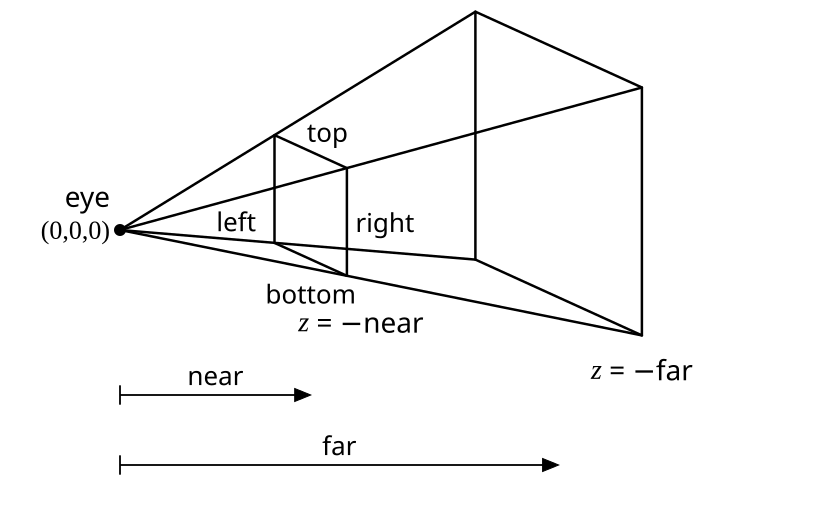
glFrustum defines a perspective transformation matrix as follows: (left,bottom,-near) and (right,top,-near) specify the points on the near clipping plane that are mapped to the lower left and the upper right corners of the window, respectively, assuming that the camera is located at (0,0,0). The far clipping plane is positioned at -far. Thus, we’re looking along the negative Z axis.
Perspective Projection Matrix
Maps the view volume (view frustum) to normalized device coordinates (everything in [−1,1]3 ):
Notes:
As long as the window defined by (r,l) and (t,b) is symmetric about the Z-axis (in other words l = -r and b = -t), the shearing terms in the third column are identically zero, and no shearing will take place.
Making r and l closer to each other (shrinking the horizontal width of the window) results in an increase in the X-axis scaling – horizontal zoom. Similarly, making t and b closer zooms along the Y-axis. In fact, for a symmetric window (l = -r), 2n/(r-l) is simply 1/tan(h), where h is half the horizontal viewing angle.
Perspective Projection Matrix
Example:
By multiplying the eye coordinates of the bottom left corner of the view frustum we see that after the division by the homogeneous coordinate we get [-1,-1,-1].
Similarly to parallel projection, the NDC range is between -1 and 1 for all three coordinates, and the NDC coordinate system is left-handed: farther away points have a larger Z coordinate (closer to 1).
The View Frustum
eye coordinates
normalized device coordinates
The perspective projection matrix at work. Left, the view frustum in eye coordinates (the eye at the origin, looking down −z) with an object inside; right, the normalized device cube with the same object after the matrix and the division by w. The near plane maps to z = −1, the far plane to z = 1; note how the far half of the frustum is squeezed into a thin slab near z = 1 (the nonlinear depth mapping, a few slides on). The off-axis shift makes the frustum skewed: the shear terms (r+l)/(r−l) and (t+b)/(t−b) become nonzero.
Demo: move the sliders; drag either view to turn it. The matrix updates live. The near and far planes slide along the pyramid of view (gray), which only widens or narrows with the field of view; the house stays where it is, so moving a plane past it takes it out of the cube.
Derivation, part I (affine)
The view volume is defined as a general (possibly skewed) viewing pyramid. We first make this pyramid into a canonical one:
We first shear the skewed pyramid, then scale.
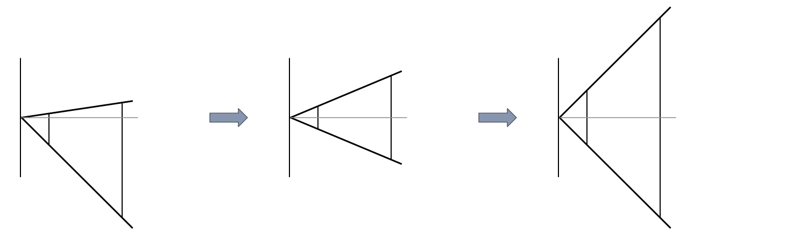
Shearing Matrix
Transforms the center of the viewing window on the near plane [(r +l )/2, (t +b )/2, −n ] to [0, 0, −n ] , making the view pyramid symmetric about the Z-axis:
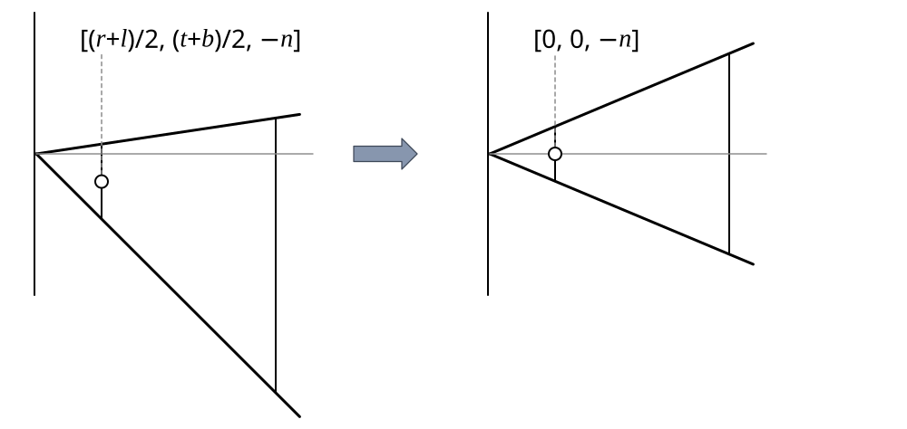
What is the appropriate shearing transform? Consider the line through the center of the skewed pyramid. It goes from the origin to the point ((r+l)/2, (t+b)/2, -n)
After shearing we’d like this vector to lie on the negative z-axis, transforming the point above onto (0, 0, -n). It is easy to see that this can be accomplished by the above matrix.
Scaling Matrix
Scale the symmetric pyramid to create a 45 degree angle between each plane and the Z-axis:
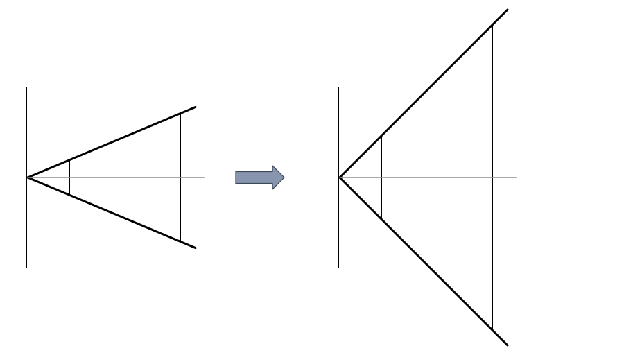
Now that the pyramid is symmetric around the origin, let’s find a scaling matrix that would make 45 degree angles between its planes and the negative z-axis. We can achieve this goal by scaling the near window, such that both its width and its height become 2n. It is easy to see that this can be accomplished by the above matrix.
Derivation, part II (perspective)
Assuming the center of projection at (0,0,0) and the projection plane is at z = −1
We want to find a perspective transformation in the homogeneous space that would preserve depth relationships (we’ll need depth information both for clipping and for hidden line/surface removal) as well as transform planes into planes.
Assuming that the center of projection is at the origin, and the projection plane is z = -1, we have the following (from similar triangles):
xs/-1 = xe/ze, thus xs = xe/-ze
ys/-1 = ye/ze, thus ys = ye/-ze
This implies the matrix on the slide. After normalization we will get the expressions we want for x and y.
Other matrices might have done the job as well, but this one retains the z values, mapping them monotonically to the interval [-1,1].
Derivation, part II (perspective)
The canonical pyramid is then transformed into a cube, using a perspective transformation:
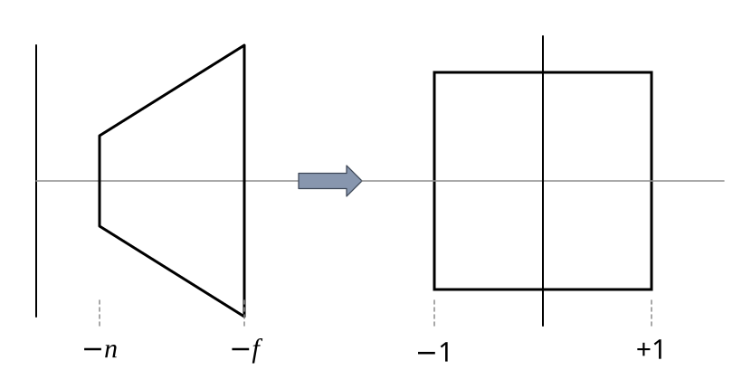
Thus, zs = -(Aze + B)/ze
We have two unknowns, so all we need is two equations. We want the plane ze = -n to map onto the plane zs = -1. Similarly, ze = -f maps onto zs = 1.
-1 = (-An + B)/n ==> -n = B - An ==> B = An - n
1 = (-Af + B)/f ==> f = B - Af
f = An - n - Af ==> f + n = A(n - f) ==> A = (f+n)/(n-f)
B = An - n = n(f+n)/(n-f) - n = fn/(n-f) + n^2/(n-f) - n(n-f)/(n-f)
B = 2fn/(n-f)
Finally...
Multiplying these three transformations gives us the desired matrix:
Non-linear (but monotonic) mapping of Z values
This plot shows the values of Z after the perspective transformation (for near = 1 and far = 10 by default; the sliders change them, on a logarithmic scale). The Z values in the interval [-1,-10] are mapped in a non-linear, but monotonic, fashion to the range [-1,1]. We will also see that this mapping preserves lines and planes. This property along with the monotonicity allows us to subsequently use the Z values for depth comparisons which we need to make in order to perform hidden surface removal later on.
The near plane matters more than the far one. z_ndc = (f+n)/(f−n) − 2fn/((f−n)d), so half of the [−1, 1] range is used up by d = 2nf/(f+n), which is about 2n when f ≫ n: the precision is spent close to the eye. Try n = 0.1, f = 1000: half of the range is gone by d ≈ 0.2. The resolution of a 24-bit depth buffer at distance d is about 2⁻²⁴ (f−n) d²/(fn): at the far plane, 2⁻²⁴ (f−n) f/n, which grows like f/n. Pushing the far plane out costs little; pulling the near plane in costs a lot. Far-away surfaces whose depths fall into the same bucket flicker (z-fighting), back in week 7.
View Frustum Clipping
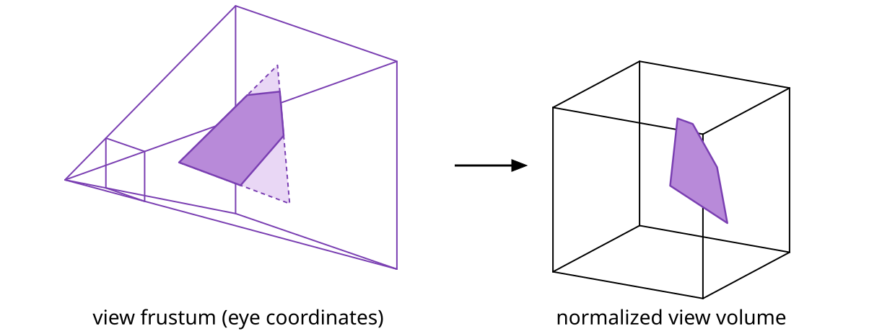
After applying the projection and normalizing, all points inside the view frustum lie in the canonical cube [−1,1]×[−1,1]×[−1,1]
The coordinates of any point after the perspective divide must lie inside the [-1,1] cube. Thus, in homogeneous coordinates it must hold that x/w < 1 and also x/w > -1, and so forth for the y and z coordinates.
Note that points in front of the eye all have a negative z coordinate, since the camera is looking down the negative Z axis. Thus, their w coordinate must be positive. Then multiplying the inequalities by w does not flip the inequality, and we get x < w, x > -w, and so forth.
Clipping in homogeneous coordinates has two main advantages:
The sign of w is still known, so primitives that cross the eye plane (w = 0) can be clipped correctly. After the perspective divide the sign is lost: a point behind the eye can get valid-looking screen coordinates x and y, mirrored (its z_ndc is always greater than 1, so a single point is still rejected), and an edge or triangle with vertices on both sides of the eye plane, drawn between its projected vertices, covers the wrong part of the screen;
The clipping algorithm is exactly the same regardless of the type of projection: orthographic or perspective. This makes it easier to implement clipping in hardware.
A triangle partly outside the frustum, its clipped part, and the clipped part in normalized coordinates.
View Frustum Clipping
After applying the projection and normalizing, all points inside the view frustum lie in the canonical cube [−1,1]×[−1,1]×[−1,1]
View frustum clipping may be done by checking each coordinate against the interval [−1,1]
Problem : an edge that crosses behind the eye projects to the wrong segment.Solution : perform clipping before the perspective division.
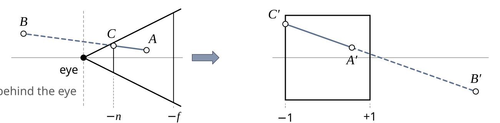
The coordinates of any point after the perspective divide must lie inside the [-1,1] cube. Thus, in homogeneous coordinates it must hold that x/w < 1 and also x/w > -1, and so forth for the y and z coordinates.
Note that points in front of the eye all have a negative z coordinate, since the camera is looking down the negative Z axis. Thus, their w coordinate must be positive. Then multiplying the inequalities by w does not flip the inequality, and we get x < w, x > -w, and so forth.
Clipping in homogeneous coordinates has two main advantages:
The sign of w is still known, so primitives that cross the eye plane (w = 0) can be clipped correctly. After the perspective divide the sign is lost: a point behind the eye can get valid-looking screen coordinates x and y, mirrored (its z_ndc is always greater than 1, so a single point is still rejected), and an edge or triangle with vertices on both sides of the eye plane, drawn between its projected vertices, covers the wrong part of the screen;
The clipping algorithm is exactly the same regardless of the type of projection: orthographic or perspective. This makes it easier to implement clipping in hardware.
The figure, with n = 1 and f = 3: the edge AB starts at A, inside the frustum, and ends at B, behind the eye. B has w = −z < 0, so after the division its y lands on the mirrored side, and its z_ndc is greater than 1 (every point behind the eye gets z_ndc > (f+n)/(f−n) > 1). A point test alone would reject B correctly. The trouble is the edge: the rasterizer joins the projected endpoints A′ and B′, and that segment (dashed) cuts through the cube although it is not the image of AB; the true image of the edge runs off to infinity in the other direction. Clipping against the near plane first keeps only the part from A to C, and its image A′C′ is correct.
View Frustum Clipping
In homogeneous coordinates all points inside the view frustum satisfy all of the following inequalities:
Lines must be clipped against the planes:
The coordinates of any point after the perspective divide must lie inside the [-1,1] cube. Thus, in homogeneous coordinates it must hold that -1 < x/w < 1, and so forth for the y and z coordinates.
Note that points in front of the eye all have a negative z coordinate, since the camera is looking down the negative Z axis. Thus, their w coordinate must be positive. Then multiplying the inequalities by w does not flip the inequality, and we get -w < x < w, and so forth.
Clipping in homogeneous coordinates has two main advantages:
The sign of w is still known, so primitives that cross the eye plane (w = 0) can be clipped correctly. After the perspective divide the sign is lost: a point behind the eye can get valid-looking screen coordinates x and y, mirrored (its z_ndc is always greater than 1, so a single point is still rejected), and an edge or triangle with vertices on both sides of the eye plane, drawn between its projected vertices, covers the wrong part of the screen;
The clipping algorithm is exactly the same regardless of the type of projection: orthographic or perspective. This makes it easier to implement clipping in hardware.
Viewport Transformation (in OpenGL)
Defines a pixel rectangle in the window into which the final image is mapped:
glViewport(x, y, width, height)
(x , y ) specify the lower left corner of the viewport:
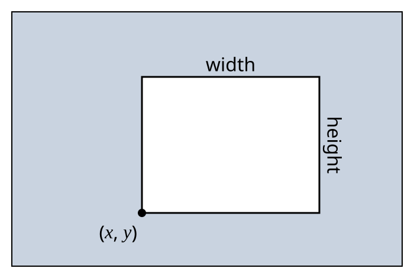
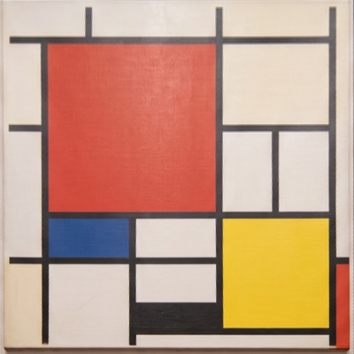
By default, the initial viewport fills the entire window:
(0, 0, winWidth, winHeight)
Note: it is the responsibility of the programmer to make sure that the viewport’s aspect ratio is the same as that of the view volume, or handle the case where the aspect ratios do not correspond, if distortion is to be avoided.
Viewport Transformation (x,y
Transforms normalized device (nd) coordinates to raster (r) coordinates.
nd coordinates range in [−1,1], [−1,1]
raster coordinates range in [x, x +width ], [y, y +height ]
The resulting transformation is:
Done by graphics API (and not in your program)
How do we arrive at the transformation?
Ok, first we shift the ndc’s such that the lower left corner is at the origin. This, of course, is done by translating by 1.
Now the ndc’s occupy a 2x2 square. To make the width and height right we scale each coordinate appropriately.
Finally, we translate to the lower left corner of the viewport.
Writing this in matrix notation is left as an exercise.
Raster coordinates are the pixel positions the rasterizer works with (week 7); OpenGL calls them window coordinates.
Viewport Transformation (z
Transforms normalized device (nd) depth coordinates from [−1,1] into [0,1] .
Done by the graphics API (and not in your program)
Summary: Coordinate Systems
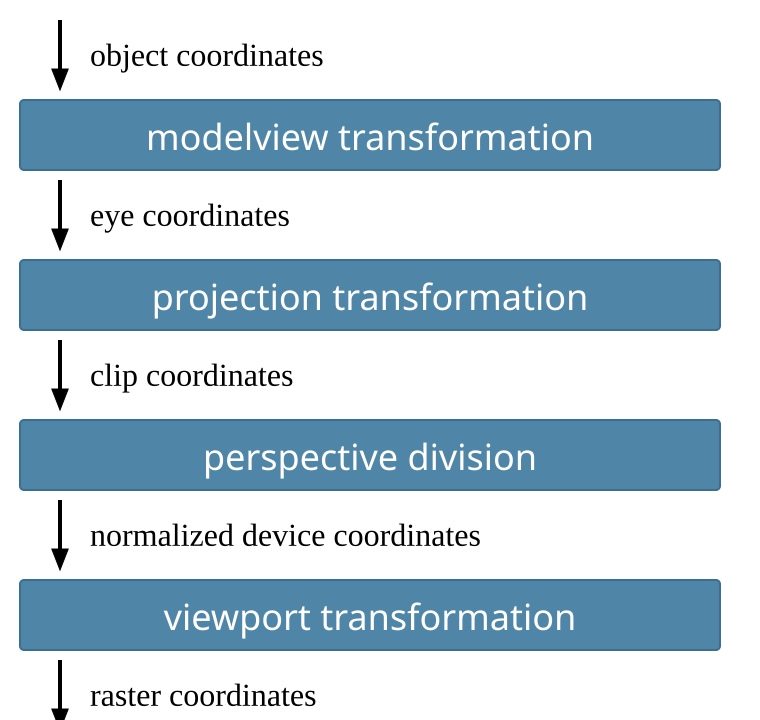
Positioning the objects and placing and pointing the camera is composited into a single transformation matrix that transforms object coordinates into eye coordinates (sometimes referred to as modelview)
The projection matrix transforms eye coordinates into coordinates in the canonical or normalized view volume, where they can be clipped efficiently.
The clipped coordinates can now be projected onto the projection plane, yielding normalized device coordinates. Note, however, that we still keep the z coordinate around, in order to facilitate hidden line and hidden surface removal when scan-converting.
The viewport transformation takes the normalized device coordinates, which are typically in the range [-1,1] in x and y. and transforms them to raster coordinates, e.g., [0.0, 640.0] and [0.0, 480.0]. The z coordinate is transformed to the [0,1] range for hidden surface removal purposes.
The Camera Matrix in Computer Vision
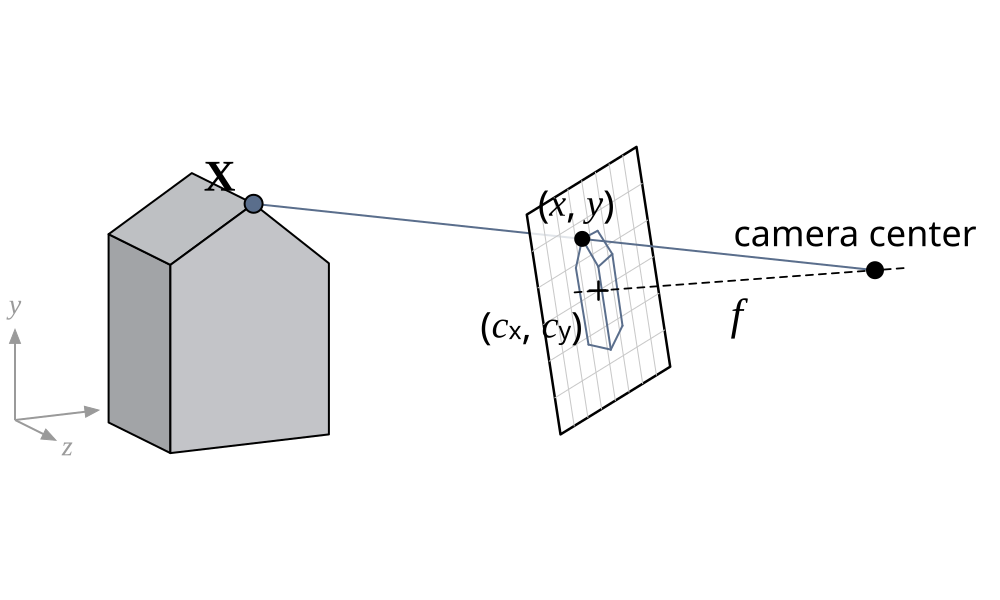
From a 3D point to a pixel, in two steps:
[R | t ] , the extrinsics : where the camera is and where it points (the view matrix)K intrinsics : the lens and the sensor
f (cx , cy ) : the image center
one 3 × 4 matrix takes a 3D point to its pixel
The graphics pipeline without depth:z
Computer vision describes the same camera with a different vocabulary. A world point X reaches a pixel in two steps. First, [R | t] expresses the point in the camera's own frame: the rotation R and the translation t say where the camera is and where it points. This is exactly the view matrix (its top three rows), and these are called the extrinsic parameters. Second, K, the intrinsic matrix, describes the lens and the sensor: f is the focal length measured in pixels (zooming in increases it), and (c_x, c_y) is the image center, the pixel where the optical axis meets the image. In the figure, the ray from X to the camera center crosses the image plane at the pixel (x, y).
Together, P = K [R | t] is a 3 × 4 matrix that takes a 3D point (in homogeneous coordinates) to its pixel (divide by the third coordinate, as always). It has 11 degrees of freedom: 6 for the pose (3 for the rotation, 3 for the position) and 5 for K in general (the two focal lengths may differ if the pixels are not square, and a skew term, which is zero for real sensors).
The connection with the graphics pipeline: multiply the viewport transformation by the perspective projection matrix of a symmetric frustum and apply it to eye coordinates. The x, y and w rows are the camera matrix (f = (W/2) cot(θ/2) for an image W pixels wide with field of view θ; the image center is the middle of the viewport); the remaining row computes depth, which graphics keeps for the z-buffer and a camera does not need. The two fields use different conventions (graphics: the camera looks down −z and image y points up; vision: the camera looks down +z and image y points down); recitation 3 goes through them.
Camera Calibration
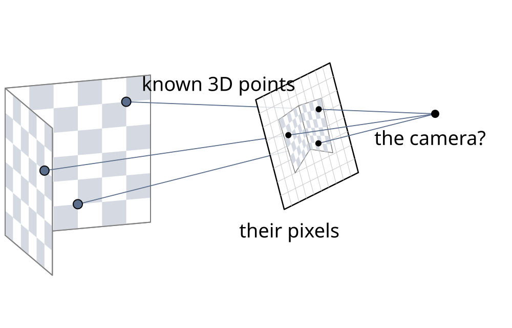
Known: 3D points on an object, and their pixels in a photo
Unknown: the camera, P = K [R | t ]
Each point gives two equations (its x y
P more points: the best fit (least squares)
Then split P K R , t
Used for measuring from photographs, augmented reality, and inserting synthetic objects into photos
Calibration runs the camera backwards: from points whose 3D positions are known (the corners of a calibration object, here two checkerboards at a right angle) and the pixels where they appear in a photograph, recover the camera matrix P, and from it the camera's intrinsics and pose.
Each point gives two equations, one for its image x coordinate and one for its y, and both are linear in the 12 entries of P. Since P is only defined up to scale, it has 11 unknowns, so 6 points suffice (they must not all lie on one plane: a single plane does not determine the camera). In practice there are many more points, and the measured pixels are noisy, so we take the P that fits all the equations best (least squares).
P = K [R | t], with K upper triangular and R a rotation, and the two can be pulled apart again: this gives the focal length and image center, and where the camera was and where it pointed. The details are in recitation 3.
Real lenses also bend straight lines a little (lens distortion); practical calibration tools (for example OpenCV's) use several photographs of a flat checkerboard and estimate the distortion too, starting from a linear estimate like this one. We use calibration in week 12 to insert a synthetic object into a real photograph.
Calibration: an Example
the photo: measured points (+), and where the estimated camera puts them (○); their average distance is the reprojection error
true camera (black), estimate (blue)
K̂
Computed live. A camera (K on the right, top) photographs a calibration object: two checkerboards at a right angle, 50 known corners. The measured image points are the true projections plus Gaussian noise of σ pixels (the + marks; gray ones are not used). The method of the previous slide (least squares over the points used, after normalizing the points for numerical stability) estimates P, which is then split into K̂, R and t. The blue circles are the estimate's reprojections of the points used, and the blue camera in the middle is where the estimate puts the camera.
Demo: with σ = 0 the estimate is exact, from as few as 6 points. Raise the noise: with few points the estimate wanders (focal length, principal point, camera position); more points average the noise out. Drag the middle view to turn it.
Note that the reprojection error can be small even when K̂ is off: focal length and distance trade off against each other (a closer, wider camera sees nearly the same image); the second plane is what pins them down.
3D Viewing Pipeline
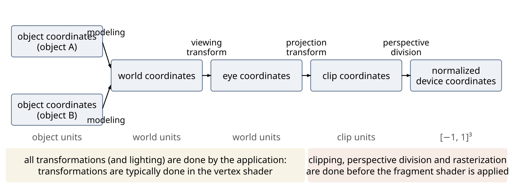
The Complete Rendering Pipeline
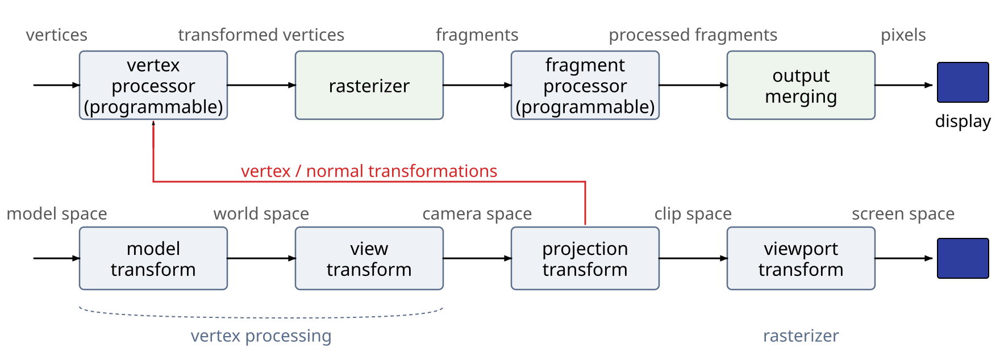